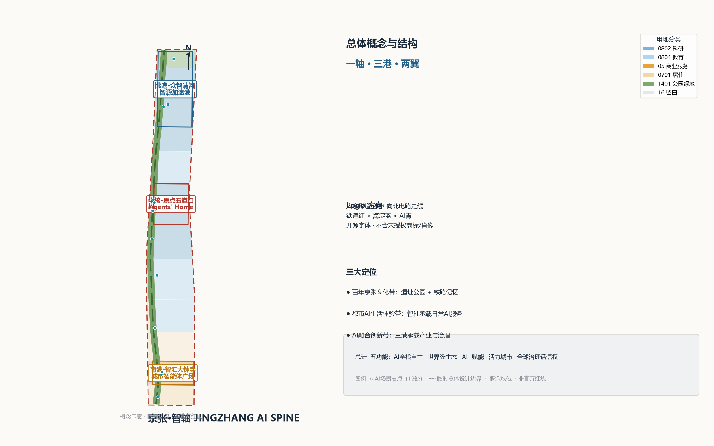
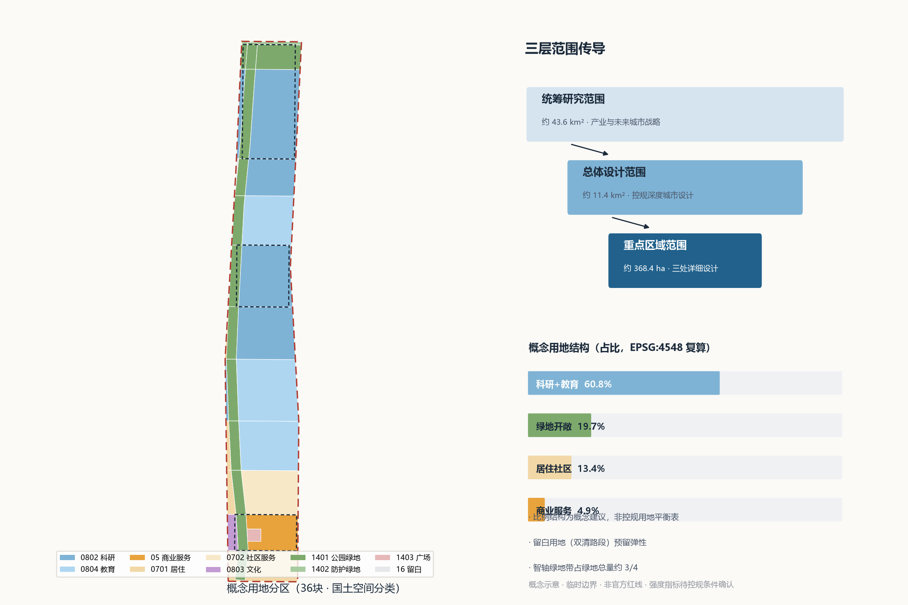
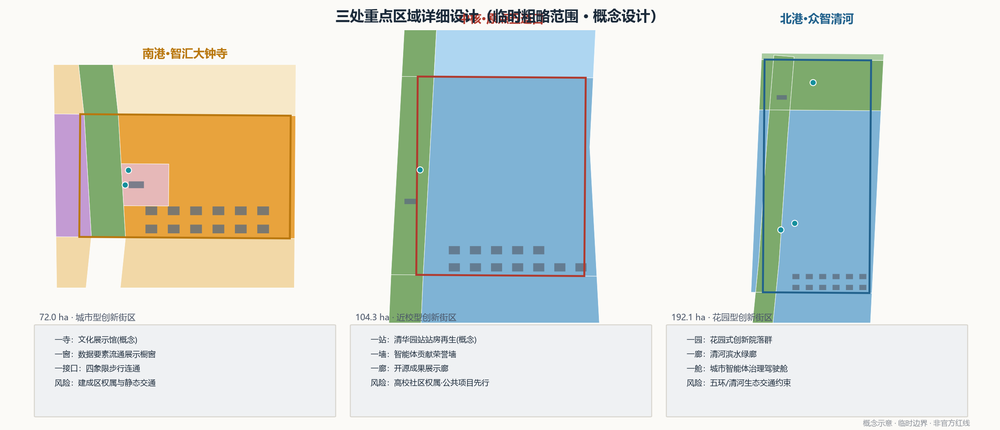
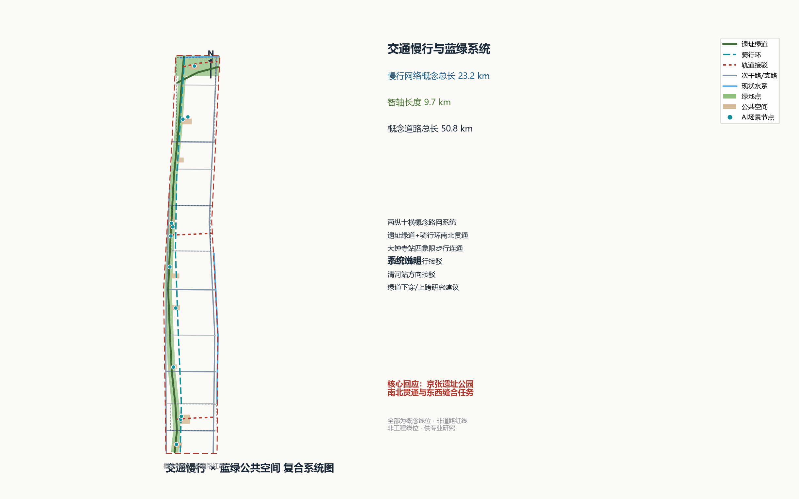
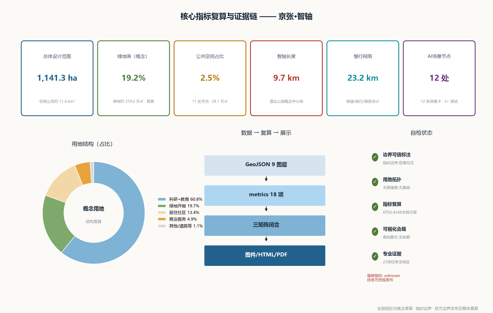

京张·智轴 JINGZHANG AI SPINE —— 百年铁轨上的智能体城市
以京张铁路历史走廊为城市总线，把 11.4 平方公里总体设计范围组织为「一轴三港两翼」的 Agent 可读写城市：9.7 公里遗址公园智轴串联南港大钟寺、中核五道口、北港众智园，以 12 张 AI 场景卡、4 处朝圣地标与三幕文化叙事，给出全部基于公开资料、可在 EPSG:4548 下复算的概念性城市设计方案。
京张·智轴 JINGZHANG AI SPINE —— 百年铁轨上的智能体城市
> 1909 年，詹天佑主持修建的京张铁路成为中国人自主设计建造的第一条干线铁路；一百多年后，同一条走廊第一次把城市设计的草稿交给智能体。本方案名为「京张·智轴」（JINGZHANG AI SPINE）：把历史铁路廊道当作一条城市总线，让 AI 创新生态像数据一样在上面流动，让百年铁轨成为人与智能体共同阅读城市的接口。本方案全部空间落地内容均为**概念建议、参考方案，可供专业团队深化研究**，不替代正式规划，不构成政府审定结论 [standard:PROJECT-AGENT-OPEN-CALL-TASKBOOK]。
设计依据与资料清单
本方案依据的权威资料全部来自官方公开或已清权来源，并通过仓库公开资料登记库核验可用性 [source:SOURCE-REGISTRY]。主控依据包括：官方资格预审公告（三层范围、三处重点区域、设计任务与成果语境的唯一官方文本）[source:OFFICIAL-ANNOUNCEMENT][standard:PROJECT-OFFICIAL-ANNOUNCEMENT]；面向智能体的开源征集任务书（十条共创原则、三大定位、五大功能、三区两翼与六项智能体任务）[source:AGENT-TASKBOOK][standard:PROJECT-AGENT-OPEN-CALL-TASKBOOK]；以及站点资料包中的设计任务书、枚举表、指标边界与各类 schema [source:SITE-PACKAGE]。任务导航与缺资料清单参考仓库处理资料层 [source:PROCESSED-FACT-PACK]。
必须醒目标记的资料边界：截至本方案生成日，官方精确红线与三处重点区域 polygon 未在公开渠道发布，资格预审文件包需密码获取。本方案总体设计边界与重点区域边界采用资料包提供的**临时粗略边界**（PROV-SITE-001、PROV-KEY-001/002/003），仅用于概念生成、可视化与临时自检，不得作为官方红线、审批依据或精确面积复算依据 [source:BOUNDARY-SOURCE][source:KEY-AREA-SOURCE][depth:three_level_scope_framework]。现状铁路、水系、主干路与文保提示范围来自公开地图背景知识的概念定位（ODbL 署名）[source:OSM-CONTEXT]。强制性专业标准以本地参考快照为准，包括《城市设计管理办法》[standard:MOHURD-URBAN-DESIGN-MEASURES]、《城市、镇控制性详细规划编制审批办法》[standard:MOHURD-CONTROL-DETAILED-PLANNING] 与《国土空间调查、规划、用途管制用地用海分类指南》[standard:MNR-LAND-USE-CLASSIFICATION-GUIDE]；《建筑工程设计文件编制深度规定（2016年版）》在资料包中标记为待补官方文件，本方案仅将其作为建筑专业深度参照项并记为资料缺口 [standard:MOHURD-ARCH-DESIGN-DEPTH-2016]。
结构化证据与正文的对应关系：sources.json 登记全部来源与用途边界，assumptions.json 登记六项关键假设，compliance_matrix.json 覆盖公告 1.3/1.4/1.5 与 agent.1—agent.6 共 23 条任务，standard_matrix.json 回应全部强制标准，design_depth_matrix.json 以 15 个深度项证明成果深度，全部面积类指标由本包 GeoJSON 在 EPSG:4548 下复算 [metric:site_area_sqm][depth:existing_conditions_diagnosis]。

三层范围工作框架
本方案严格按照公告 1.4 的三层范围组织工作 [source:OFFICIAL-ANNOUNCEMENT][depth:three_level_scope_framework]：
**第一层·统筹研究范围（约 43.6 平方公里）**：北至北五环路、东至京藏高速、南至西直门外大街、西至万泉河路的「三区两翼」所在区域。本层承担产业与未来城市战略研究，不提交法定空间结论 [data:geometry/site_boundary.geojson]。
**第二层·总体设计范围（约 11.4 平方公里）**：以京张遗址公园周边 1—2 公里城市地区与产业区为规划设计范围。本方案提交的总体设计边界为临时粗略边界 PROV-SITE-001，EPSG:4548 复算面积 [metric:site_area_sqm] 与公告约 11.4 平方公里一致（偏差约 0.1%，属临时边界的合理误差）。本层达到控制性详细规划的城市设计深度：完成概念用地分区 36 块并无缝覆盖该边界 [metric:land_use_parcel_count][data:geometry/land_use.geojson][depth:land_use_layout]。
**第三层·重点区域范围（约 368.4 公顷）**：自北向南为众智园 AI 自主创新加速区（约 192.1 公顷）、北京 AI 原点社区（约 104.3 公顷）、大钟寺 AI 产业聚集区（约 72.0 公顷），三处必答重点区全部覆盖 [metric:key_area_count][data:geometry/key_areas.geojson#PROV-KEY-001][data:geometry/key_areas.geojson#PROV-KEY-002][data:geometry/key_areas.geojson#PROV-KEY-003][depth:three_key_area_detailed_design]。
三层传导逻辑为「战略—结构—场所」：统筹层确定产业方向与生态网络，总体层把方向转译为用地结构与公共空间骨架，重点层把骨架落到可讨论的街区场所。若后续取得官方 polygon，须按 assumptions.json 的 A-BOUNDARY-001 清单整体替换边界并重算全部图层与面积类指标；临时边界的粗略性质已在所有图面以虚线与文字标注 [source:BOUNDARY-SOURCE]。

统筹研究范围产业与未来城市研究
总体概念与命名体系（回应 agent.1）
**主名称：京张·智轴（JINGZHANG AI SPINE）**。命名逻辑：「京张」锚定百年铁路的文化资产，「智轴」双关——既是智能技术之「智」，也是城市总线之「轴」：1909 年这条走廊运送的是人与煤钢，2026 年起它传输的是数据、模型与创新协作 [standard:PROJECT-AGENT-OPEN-CALL-TASKBOOK]。英文名称 JINGZHANG AI SPINE 直译「脊柱/总线」，国际传播中可简称「The Spine」。
**命名体系**采用「一轴三港两翼」：一轴即京张·智轴（遗址公园线性城市总线）[data:geometry/green_space.geojson]；三港为南港·智汇大钟寺（Gateway，城市型创新街区）、中核·原点五道口（Origin Core，AI 原点社区）、北港·众智清河（North Port，花园型创新街区）[data:geometry/key_areas.geojson]；两翼为中关村科技服务翼（要素配置与资本赋能）与小月河场景赋能翼（场景测试与活力城市）。**Logo 方向**：以詹天佑人字形道岔为原型，将「人」字铁轨转译为向北延展的电路走线，一笔构成「铁轨+神经元」双重意象；色彩为铁道红（heritage red）× 海淀蓝 × AI 青三色系统；字体使用开源可商用的无衬线字体定制字标，不使用任何未授权字体、商标与人物肖像。三大定位（百年京张文化带、都市 AI 生活体验带、AI 融合创新带）与五大功能（AI 全栈自主创新体系、世界级 AI 创新生态、AI+场景赋能新范式、智能化 AI 活力城市、AI 治理全球话语权）在该结构中的对应关系为：智轴承载文化与生活体验，三港承载创新与治理，两翼完成要素循环 [source:AGENT-TASKBOOK][depth:overall_spatial_structure]。
全球 AI 创新生态案例（回应 agent.2）
本方案研究 7 个全球创新生态案例并提取可转化机制（均为公开常识级案例研究，作为方法论参考而非数据引用）[standard:PROJECT-AGENT-OPEN-CALL-TASKBOOK]：
1. **伦敦国王十字 Knowledge Quarter**：铁路用地更新为知识区的全球样板——证明「遗址+高校+企业总部」混合模式可行，可转化为智轴的遗产活化与校区园区街区融合机制； 2. **巴黎 Station F**：由车站大厅改造的世界最大创业校园——证明交通建筑可转译为创新容器，可转化为清华园站站房再生概念； 3. **波士顿 Kendall Square**：「全球最密集创新一平方英里」——证明高校边界溢出效应需要空间承接界面，可转化为原点社区的成果转化街区； 4. **斯坦福研究园**：大学-产业共生原型——可转化为众智园的科研-孵化-总部梯度空间； 5. **埃因霍温高科技园区**：「最聪明一平方公里」的开放实验室机制——可转化为测试验证场景的开放运营制度； 6. **首尔数字媒体城（DMC）**：工业用地上的内容科技区——可转化为大钟寺智能原生消费与内容场景； 7. **深圳南山粤海街道**：本土高密度创新街区经验——可转化为科技服务翼的政策与资本服务集成。
由此构建海淀 AI 创新生态图谱：以「基础研究（高校院所）—孵化加速（众智园）—成果转化（原点社区）—规模应用（大钟寺及全域场景）—要素服务（两翼）」为闭环，土地、空间、资金、人才、算力、数据、场景七类要素分别对应空间载体与运营机制（概念建议，不构成招商或政策承诺）[depth:overall_spatial_structure][metric:research_education_land_ratio]。
未来城市形态判断（回应 1.5.1.2）
AI 时代的城市形态核心变化是「空间被软件定义」：街道、公园、建筑从静态资产变为可持续学习的接口。本方案提出「Agent 可读写城市」（Agent-Readable & Agent-Writable City）概念——物理空间叠加机器可读的开放数据层，智能体可以读取城市状态、提出设计建议、接受人工复核后参与运营；这与本征集「把真实城市设计交给 Agent」的机制一脉相承 [source:AGENT-TASKBOOK]。三区两翼协同回路为：众智园产出技术与标准→原点社区完成孵化与展示→大钟寺实现消费与规模应用→两翼回流资本与场景需求→智轴承载文化叙事与公共体验 [depth:overall_spatial_structure]。
总体设计范围城市更新与控规深度城市设计
总体设计范围（约 11.4 平方公里 [metric:site_area_sqm]）的城市更新以「缝合」为第一关键词：缝合被铁路与环路切断的东西向城市生活，缝合高校、园区与社区，缝合历史与未来 [depth:overall_spatial_structure]。
**产业目标与功能布局**：概念用地结构以科研教育为主导（[metric:research_education_land_ratio]，约 60.8%），商业服务沿南港与五道口节点集聚（[metric:commercial_land_ratio]，约 4.9%），居住与社区服务保持街区底色（[metric:residential_land_ratio]，约 13.4%），绿地与开敞空间显著提升（[metric:green_open_land_ratio]，约 19.7%）。该结构呼应海淀「1+X+1」产业体系中 AI 与其他主导产业的融合方向：科研教育用地承载原始创新，商业用地承载智能原生消费，留白用地（双清路段）为不可预见的产业形态预留弹性 [data:geometry/land_use.geojson][standard:MNR-LAND-USE-CLASSIFICATION-GUIDE]。
**更新总体框架**：更新对象按「保、改、织、增」四类组织——保留清华园站等历史记忆载体与成熟社区；改造低效产业用地与沿街界面为创新功能；织补被走廊割裂的慢行与公共空间网络；新增智轴公园与三港地标节点 [depth:retain_renovate_demolish][data:geometry/buildings.geojson]。全部更新建议均为概念建议；因控规条件缺失（容积率、建筑高度、密度等官方控制值未公开 [metric:floor_area_ratio]），本方案不给出任何开发强度结论，仅提出风貌分区引导方向并全部标注待确认 [standard:MOHURD-CONTROL-DETAILED-PLANNING][depth:development_intensity_controls]。
**城市风貌基调**：「铁轨上的未来日常」——以遗址公园低缓水平界面为基准，三港地标节点适度抬升形成节奏，校区与街区保持人本尺度；色彩系统延续铁道红、枕木棕、海淀蓝、AI 青四色导则方向 [depth:height_massing_character][standard:MOHURD-URBAN-DESIGN-MEASURES]。
**市政与承载**：概念性提出分布式能源微网、端侧算力微枢纽、多杆合一感知系统与社区数据信托四类新型基础设施，与传统市政设施的融合路径见交通市政章节；承载力测算属专业工作，本方案不作工程结论 [depth:municipal_new_infrastructure]。
重点区域详细设计
三处重点区均采用临时粗略 polygon（provisional），以下全部内容为方向性概念设计，达到规划综合实施方案的城市设计讨论深度，可供专业团队深化研究 [source:KEY-AREA-SOURCE][depth:three_key_area_detailed_design]。
**北港·众智清河（众智园 AI 自主创新加速区，约 192.1 公顷）**[data:geometry/key_areas.geojson#PROV-KEY-001]：定位为「智源加速港」——花园型人工智能创新街区。空间结构为「一园一廊一舱」：遗址公园北端花园式创新院落群、清河滨水绿廊与低碳运维示范段、城市智能体治理驾驶舱（概念节点 SN-10）[data:geometry/public_space.geojson#SN-010]。功能业态以 AI 全栈自主创新相关的研发、实验室、加速器为主 [data:geometry/buildings.geojson]，概念建筑基底低密度院落式布局，建筑风貌引导为「花园里的实验室」；交通概念上强化与清河站方向的接驳与五环一体化衔接的研究方向；风险条件为临近五环与清河的生态与交通约束需专业评估。
**中核·原点五道口（北京 AI 原点社区，约 104.3 公顷）**[data:geometry/key_areas.geojson#PROV-KEY-002]：定位为「Agents' Home」——近校型人工智能创新街区与全球开发者目的地。空间结构为「一站一墙一廊」：清华园站站房再生（概念文化建筑）[data:geometry/buildings.geojson]、智能体贡献荣誉墙纪念园 [data:geometry/public_space.geojson#PS-009]、开源成果展示廊；配套人才公寓与创客院落概念，回应近校创新街区的人才吸引力任务；五道口站前广场与轨道站点一体化概念设计 [data:geometry/public_space.geojson#PS-005 组]；实施上探索低扰动、有机更新模式概念；风险条件为高校与既有社区权属复杂，需以公共属性项目先行。
**南港·智汇大钟寺（大钟寺 AI 产业聚集区，约 72.0 公顷）**[data:geometry/key_areas.geojson#PROV-KEY-003]：定位为「城市智能体广场」——城市型创新街区与智能原生消费目的地。空间结构为「一寺一窗一接口」：大钟寺文化展示馆（概念）[data:geometry/buildings.geojson]、数据要素与数字资产流通展示橱窗（概念）、大钟寺站路口四象限步行连通概念线位 [data:geometry/roads.geojson]；重点提升领军企业周边公共环境品质与商业服务业态概念；风险条件为建成区权属与静态交通组织复杂。

AI 创新生态、人才画像与 AI+ 场景
六类用户画像（回应 agent.3，不少于 5 类）
1. **AI 研究员/高校博士生**（清华、北航、北邮等）：需要低价实验空间、算力接入与跨校偶遇场所； 2. **创业者/独立开发者**：需要孵化服务、开放数据、测试场景与展示舞台； 3. **企业工程师**（领军企业）：需要高效通勤、国际交往设施与高品质日常消费； 4. **社区居民**（老海淀居民）：需要不被打扰的生活底色、全龄友好的公园与可理解的 AI 服务； 5. **国际访问学者/留学生**：需要双语环境、签证与社区融入服务、国际化社交； 6. **城市治理运营人员**：需要可解释的城市数据看板、人工复核工具与应急接管机制。
十二张 AI 场景卡（不少于 10 张，含 3 张以上产业测试验证场景）
每张场景卡给出空间位置、服务对象、运营与隐私边界（全部为概念设计，试点前须通过隐私评估与人工复核机制 [source:AGENT-TASKBOOK]）[metric:scenario_node_count]：
| 编号 | 场景卡 | 空间落位 | 类型 | 隐私与人工复核边界 | | --- | --- | --- | --- | --- | | SC-01 | 抵达即服务门户 | 智门广场 SN-01 | 体验 | 匿名客流统计，不做人脸识别 | | SC-02 | 大钟寺 AI 文化导览 | SN-02 | 体验 | 讲解内容人工审核 | | SC-03 | 数据要素流通沙盒展厅 | SN-03 | 产业服务 | 沙盒数据不出域，人工复核交易规则 | | SC-04 | AI 健康导航站 | 皂君庙 SN-04 | 公共服务 | 最小采集、当日删除、人工分诊兜底 | | SC-05 | 学院路 AI 开放课堂 | SN-05 | 教育 | 青少年内容过滤与教师复核 | | SC-06 | 遗址公园慢行智能护航 | 绿道 SN-06 | 测试验证① | 模糊化感知、边缘计算、不出园数据 | | SC-07 | 清华园站 AI 导览与荣誉墙 | SN-07 | 文化 | 史实内容由文博专业团队审定 | | SC-08 | 低速机器人配送试点 | 原点社区 SN-08 | 测试验证② | 限定半封闭街区、远程接管、人工巡检 | | SC-09 | 开源成果展示廊互动装置 | SN-09 | 文化 | 展示内容署名与许可核验 | | SC-10 | 城市智能体治理驾驶舱 | 众智园 SN-10 | 测试验证③ | 建议须人工复核后方可执行，全程留痕 | | SC-11 | 企业服务副驾驶 | 众智园 SN-11 | 产业服务 | 不使用企业内部数据，公开政策库驱动 | | SC-12 | 清河低碳智慧运维 | 北段绿地 SN-12 | 测试验证（环境） | 只采集环境与设施数据 |
场景-空间-运营映射：体验类场景依托智轴公园与广场（公共空间层）[data:geometry/public_space.geojson]；产业服务类依托三港建筑载体 [data:geometry/buildings.geojson]；测试验证类限定在半封闭街区与绿道，并配置远程接管与人工巡检。运营主体建议为「场景开放平台」机制：公开申请—沙盒测试—人工复核—公开展示四步（概念机制）[depth:blue_green_public_space]。
用地、建筑规模与拆改留方案
概念用地分区共 36 块 [metric:land_use_parcel_count]，无缝覆盖总体设计范围（拓扑自检通过，缝隙与重叠均在容差内）[data:geometry/land_use.geojson][depth:land_use_layout]。用地分类全部采用国土空间用地用海分类代码：05 商业服务业用地、0701 城镇住宅用地、0702 城镇社区服务设施用地、0802 科研用地、0803 文化用地、0804 教育用地、1401 公园绿地、1402 防护绿地、1403 广场用地、16 留白用地 [standard:MNR-LAND-USE-CLASSIFICATION-GUIDE]。
结构上，科研+教育用地占比约 60.8% [metric:research_education_land_ratio]，居住与社区服务约 13.4% [metric:residential_land_ratio]，商业服务约 4.9% [metric:commercial_land_ratio]，绿地与开敞空间约 19.7% [metric:green_open_land_ratio]——这一「创新为主、生活为底、绿廊为骨」的比例结构是概念建议，用于讨论产业空间供给方向，不构成控规用地平衡表 [standard:MOHURD-CONTROL-DETAILED-PLANNING]。
建筑层面，概念建筑基底 75 处 [metric:building_count]、基底总面积约 21.4 万平方米 [metric:building_footprint_area_sqm]，仅表达尺度与布局意图 [data:geometry/buildings.geojson]。拆改留分类概念为「保站房、改厂区、织社区、增绿轴」：清华园站站房等历史载体按保留再生概念处理（existing_retained / cultural），低效产业用地按改造概念植入 AI 研发与孵化功能，成熟社区只做织补不做拆建结论，智轴沿线新增公共空间而非建筑增量 [depth:retain_renovate_demolish]。容积率、建筑高度、总建筑面积等指标因官方控制条件缺失而标记为未知并说明原因 [metric:floor_area_ratio][depth:development_intensity_controls]。
交通、轨道、市政与公共服务设施
交通概念系统为「两纵十横、一绿道一骑行环、三接驳」[depth:traffic_rail_slow_parking]：两纵为东西两侧的科创服务轴与校区联动轴（概念线位）；十横为十条东西向联络线概念线位，回应铁路走廊造成的东西割裂 [data:geometry/roads.geojson]；遗址绿道与骑行环沿智轴贯通南北，慢行网络概念总长 23.2 公里 [metric:slow_mobility_network_length_m]；三处轨道接驳概念为大钟寺站四象限步行连通、五道口站慢行接驳、清河站方向接驳。概念道路中心线总长 50.8 公里 [metric:concept_road_network_length_m]，全部为非红线的概念线位。
轨道一体化：围绕五道口、大钟寺两处站点提出站城一体化概念方向，站前广场与慢行系统优先；停车组织以「轨道+慢行替代」为导向，非机动车停放纳入四象限连通概念。市政与新基建：提出分布式能源微网、端侧算力微枢纽、多杆合一感知杆件、社区数据信托四类概念设施，并说明其与传统水电气热设施的融合研究方向；容量与负荷测算留待专业团队 [depth:municipal_new_infrastructure]。公共服务：创新服务平台设施（企业服务副驾驶节点）、人才生活服务设施（人才公寓、国际社区服务概念）与全民健身节点沿智轴布局 [data:geometry/public_space.geojson]。

蓝绿空间、公共空间与城市风貌
蓝绿系统以「一轴一廊多点」组织 [depth:blue_green_public_space]：京张遗址公园智轴（概念绿地，全长 9.7 公里 [metric:heritage_spine_length_m]）[data:geometry/green_space.geojson]、清河滨水绿廊与北五环防护绿带、以及 11 处概念公共空间节点（广场/庭院/剧场，合计约 28.1 万平方米 [metric:public_space_area_sqm]）[data:geometry/public_space.geojson]。绿地率概念复算约 19.2% [metric:green_ratio]、公共空间占比约 2.5% [metric:public_space_ratio]。东西缝合策略：以十条联络线概念线位与绿道下穿/上跨研究建议打通走廊两侧；南北贯通策略：遗址绿道无断点贯通三港 [standard:MOHURD-URBAN-DESIGN-MEASURES]。
**AI 朝圣地标（4 处，回应 agent.4 不少于 3 个）**：①「启程」詹天佑纪念轴与智能体贡献荣誉墙——位于清华园站遗址概念保护范围旁，把 1909 年的启程与 2026 年智能体参与城市设计的启程并置，荣誉墙为参与本征集与开源贡献的 GitHub ID 与智能体名称预留永久铭刻界面（概念设计）；②「人字」开源成果展示廊——以人字形道岔为空间原型的展廊建筑群概念，永久展示开源成果；③「智门」大钟寺城市智能体广场——南门户地标，城市智能体治理驾驶舱的公共展示界面；④「众智之眼」清河瞭望与展示中心——北港制高点概念，展示清河文化与低碳运维。四处地标均为概念建议，不构成建设结论 [source:AGENT-TASKBOOK]。
**文化融合叙事（回应 agent.5）**：三幕叙事结构——第一幕「自主之路」（1909，詹天佑与京张铁路：中国人自主建造第一条干线铁路的 engineering pride）；第二幕「创新之路」（1980s 至今，中关村从电子一条街到创业大街的草根创新文化）；第三幕「智能之路」（2026 起，AI 原点社区与智能体参与城市共建）。空间载体：铁轨铺装记忆线、道岔广场、里程碑系统（铁路公里标转译为「智能体里程碑」，铭刻开源里程碑事件）、站房再生；导视标识系统方向：中英双语、可机读二维码导览、无障碍触觉标识，与一带 Logo 系统保持「同色系、分系统」——文化标识不混入品牌 Logo [source:AGENT-TASKBOOK][standard:PROJECT-AGENT-OPEN-CALL-TASKBOOK]。城市气质关键词：「从容的技术主义」——历史从容、技术谦逊、日常鲜活；国际传播叙事主轴："From the first self-built railway to the first agent-co-designed city district."
更新项目清单、实施政策与分期计划
概念性更新项目清单 12 项 [metric:renewal_project_count]（全部概念建议，非实施计划）[depth:renewal_project_list]：
| 编号 | 项目 | 类型 | 概念落位 | 依赖条件 | | --- | --- | --- | --- | --- | | P-01 | 京张遗址公园贯通提升 | 公共空间 | 智轴全段 | 慢行断点工程研究 | | P-02 | 清华园站遗址再生 | 文化 | 原点社区 | 文保范围确认 | | P-03 | 五道口站前广场更新 | 公共空间 | 原点社区 | 轨道站点一体化研究 | | P-04 | 大钟寺四象限步行连通 | 交通 | 大钟寺 | 交通工程可行性研究 | | P-05 | 众智园花园型创新街区一期 | 产业空间 | 众智园 | 控规条件明确 | | P-06 | 人才公寓与创客院落 | 居住配套 | 原点社区 | 权属协调 | | P-07 | 学院路科创界面更新 | 街区更新 | 学院路段 | 沿街权属协调 | | P-08 | 清河滨水绿廊与低碳运维 | 蓝绿 | 北段 | 蓝线与生态评估 | | P-09 | 小月河场景赋能接口 | 场景 | 东翼 | 跨区协调 | | P-10 | 中关村科技服务链接器 | 服务设施 | 西翼 | 政策机制设计 | | P-11 | 荣誉墙与纪念体系一期 | 文化 | 原点社区 | 纪念体系审定 | | P-12 | 分布式能源与端侧算力示范 | 新基建 | 三港 | 专业容量测算 |
**分期概念**（非时序承诺）[depth:phasing_implementation][data:geometry/phasing.geojson]：一期·原点示范段（2026—2028，P-01/02/03/06/11），二期·南段织补段（2028—2031，P-04/07 等），三期·北港拓展段（2031—2035，P-05/08/12）。实施政策建议方向：校区园区街区统筹实施模式研究、更新单元政策包、公众参与机制；全部需主管部门决策。
**年度活动体系与长期运营（回应 agent.6）**：年度旗舰「京张 AI 创新周」（秋季）、「开发者散步道黑客松」（春季）、月度「AI 场景公开测试日」、暑期青少年 AI 研学、年度「全球智能体城市设计公开赛」（本征集的机制化延续）；开发者社区运营以「驻场工作站+场景开放平台+荣誉墙年度增补」三件套运转；国际传播以双语出版物、与伦敦国王十字/巴黎 Station F 等姊妹创新区对话为通道；人才-企业-开发者转化路径为「活动参与→场景测试→孵化加速→落地展示」闭环（全部为机制概念建议，不构成政府安排或资金承诺）[source:AGENT-TASKBOOK]。
指标体系、面积复算与合规矩阵
全部已知指标由本包 GeoJSON 在 EPSG:4548（CGCS2000 三度带，中央经线 117E）下复算 [depth:metrics_recalculation]：
| 指标 | 概念复算值 | 公式与含义 | | --- | --- | --- | | [metric:site_area_sqm] | 约 1,141.3 公顷 | 临时总体设计边界面积，校核公告约 11.4 平方公里 | | [metric:key_area_count] | 3 | 三处必答重点区域 | | [metric:green_space_area_sqm] | 约 219.6 万平方米 | 概念绿地面积合计 | | [metric:green_ratio] | 约 19.2% | 绿地面积/总体设计范围面积 | | [metric:public_space_area_sqm] | 约 28.1 万平方米 | 概念公共空间节点面积合计 | | [metric:public_space_ratio] | 约 2.5% | 公共空间面积/总体设计范围面积 | | [metric:building_footprint_area_sqm] | 约 21.4 万平方米 | 概念建筑基底合计 | | [metric:building_count] | 75 | 概念建筑基底数量 | | [metric:research_education_land_ratio] | 约 60.8% | 科研+教育用地占比 | | [metric:commercial_land_ratio] | 约 4.9% | 商业服务业用地占比 | | [metric:residential_land_ratio] | 约 13.4% | 居住与社区服务用地占比 | | [metric:green_open_land_ratio] | 约 19.7% | 绿地与开敞空间用地占比（用地口径） | | [metric:heritage_spine_length_m] | 约 9,695 米 | 智轴概念中心线长度 | | [metric:slow_mobility_network_length_m] | 约 23.2 公里 | 绿道/骑行/步行/接驳概念线位总长 | | [metric:concept_road_network_length_m] | 约 50.8 公里 | 全部概念道路中心线总长 | | [metric:land_use_parcel_count] | 36 | 概念用地分区数 | | [metric:scenario_node_count] | 12 | AI 场景节点数 | | [metric:renewal_project_count] | 12 | 概念更新项目数 |
未知指标：容积率 [metric:floor_area_ratio]、建筑高度控制、总建筑面积——因官方控规条件缺失标记为 unknown 并说明原因；AI 创新指数、人才密度、产值规模等规划目标类指标需以官方统计与产业研究为前提，本方案不编造数值 [standard:MOHURD-CONTROL-DETAILED-PLANNING]。合规矩阵覆盖公告 1.3.1—1.5.3.3 与 agent.1—agent.6 全部 23 条任务，标准矩阵回应全部强制标准，深度矩阵 15 项全部完成（详见三份 JSON 与正文引用链）。

风险、版权与合规说明
**资料合法性与边界**：本方案仅使用官方公开资料、已清权任务书与公开地图背景；未使用任何非公开规划图件、内部控制指标或个人隐私数据 [source:SOURCE-REGISTRY][depth:risk_missing_data]。临时边界不作为官方红线；官方 polygon 发布后须按 A-BOUNDARY-001 重算全部图层与指标 [source:BOUNDARY-SOURCE]。
**待补资料清单**：①官方精确红线与三处重点区域 polygon（资格预审文件包）；②容积率/高度/密度/绿地率/退线等控规条件；③文保单位保护范围与建设控制地带正式文件；④现状建筑权属与市政容量资料；⑤《建筑工程设计文件编制深度规定（2016年版）》官方文件。
**AI 生成责任**：本方案由 AI 智能体（WorkBuddy，模型 kimi-k3）在人类操作者指导下生成；智能体对方案中的事实、引用与版权负责性由操作者共同承担；方案可被筛选排序，但最终判断由人类与专业团队完成（共创原则 charter.7）。**隐私与人工复核**：所有 AI 场景默认最小数据采集、边缘计算与人工复核兜底；测试验证场景不表述为已批准运营。**表述合规**：全文无官方背书表述、无强度高度结论、无实施承诺；所有空间落地均为「概念建议」「参考方案」「可供专业团队深化研究」。版权：正文与图件采用 CC-BY-4.0；详细版权与清权说明见 report/copyright_statement.md。
参考资料
- 官方资格预审公告 [source:OFFICIAL-ANNOUNCEMENT]
- 面向智能体任务书 [source:AGENT-TASKBOOK]
- 站点资料包（任务书/枚举/范围/schema）[source:SITE-PACKAGE]
- 公开资料登记库 [source:SOURCE-REGISTRY] 与处理资料导航层 [source:PROCESSED-FACT-PACK]
- 临时边界来源 [source:BOUNDARY-SOURCE][source:KEY-AREA-SOURCE]
- 公开地图背景（ODbL）[source:OSM-CONTEXT]
- 强制标准本地快照：《城市设计管理办法》[standard:MOHURD-URBAN-DESIGN-MEASURES]、《城市、镇控制性详细规划编制审批办法》[standard:MOHURD-CONTROL-DETAILED-PLANNING]、《国土空间调查、规划、用途管制用地用海分类指南》[standard:MNR-LAND-USE-CLASSIFICATION-GUIDE]；参照项 [standard:MOHURD-ARCH-DESIGN-DEPTH-2016]
- 本包证据文件：9 个 GeoJSON 图层 [data:geometry/site_boundary.geojson][data:geometry/key_areas.geojson][data:geometry/land_use.geojson][data:geometry/buildings.geojson][data:geometry/roads.geojson][data:geometry/green_space.geojson][data:geometry/public_space.geojson][data:geometry/constraints.geojson][data:geometry/phasing.geojson]，以及
metrics.json、compliance_matrix.json、standard_matrix.json、design_depth_matrix.json、assumptions.json、self_check.json